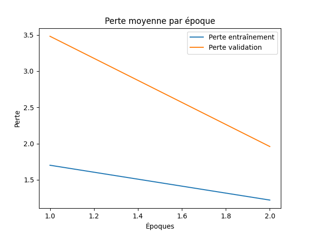
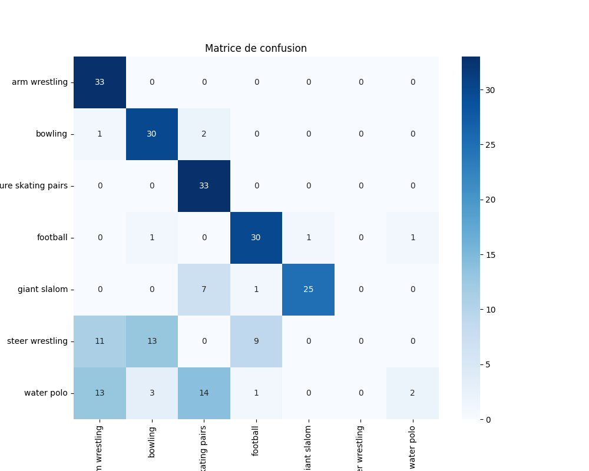
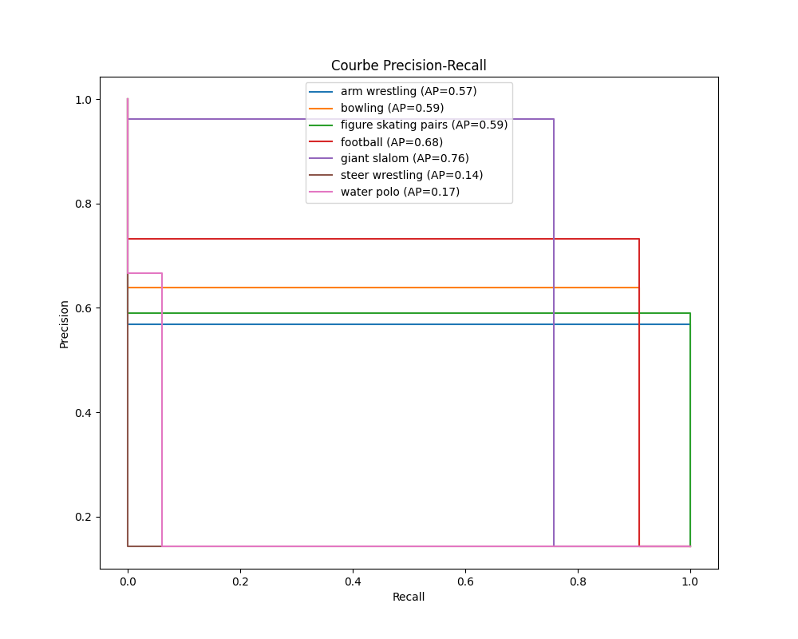

Rapport d'Évaluation du Modèle
Métriques
{
"accuracy": 0.6623376623376623,
"precision_weighted": 0.5937802213065454,
"recall_weighted": 0.6623376623376623,
"f1_score_weighted": 0.569461044003308,
"cohen_kappa": 0.6060606060606061,
"mcc": 0.6303131070144721,
"classification_report": {
"arm wrestling": {
"precision": 0.5689655172413793,
"recall": 1.0,
"f1-score": 0.7252747252747253,
"support": 33.0
},
"bowling": {
"precision": 0.6382978723404256,
"recall": 0.9090909090909091,
"f1-score": 0.75,
"support": 33.0
},
"figure skating pairs": {
"precision": 0.5892857142857143,
"recall": 1.0,
"f1-score": 0.7415730337078652,
"support": 33.0
},
"football": {
"precision": 0.7317073170731707,
"recall": 0.9090909090909091,
"f1-score": 0.8108108108108109,
"support": 33.0
},
"giant slalom": {
"precision": 0.9615384615384616,
"recall": 0.7575757575757576,
"f1-score": 0.847457627118644,
"support": 33.0
},
"steer wrestling": {
"precision": 0.0,
"recall": 0.0,
"f1-score": 0.0,
"support": 33.0
},
"water polo": {
"precision": 0.6666666666666666,
"recall": 0.06060606060606061,
"f1-score": 0.1111111111111111,
"support": 33.0
},
"accuracy": 0.6623376623376623,
"macro avg": {
"precision": 0.5937802213065455,
"recall": 0.6623376623376623,
"f1-score": 0.5694610440033081,
"support": 231.0
},
"weighted avg": {
"precision": 0.5937802213065454,
"recall": 0.6623376623376623,
"f1-score": 0.569461044003308,
"support": 231.0
}
}
}
Loss Curve.Png

Confusion Matrix.Png

Normalized Confusion Matrix.Png
Precision Recall Curves.Png
